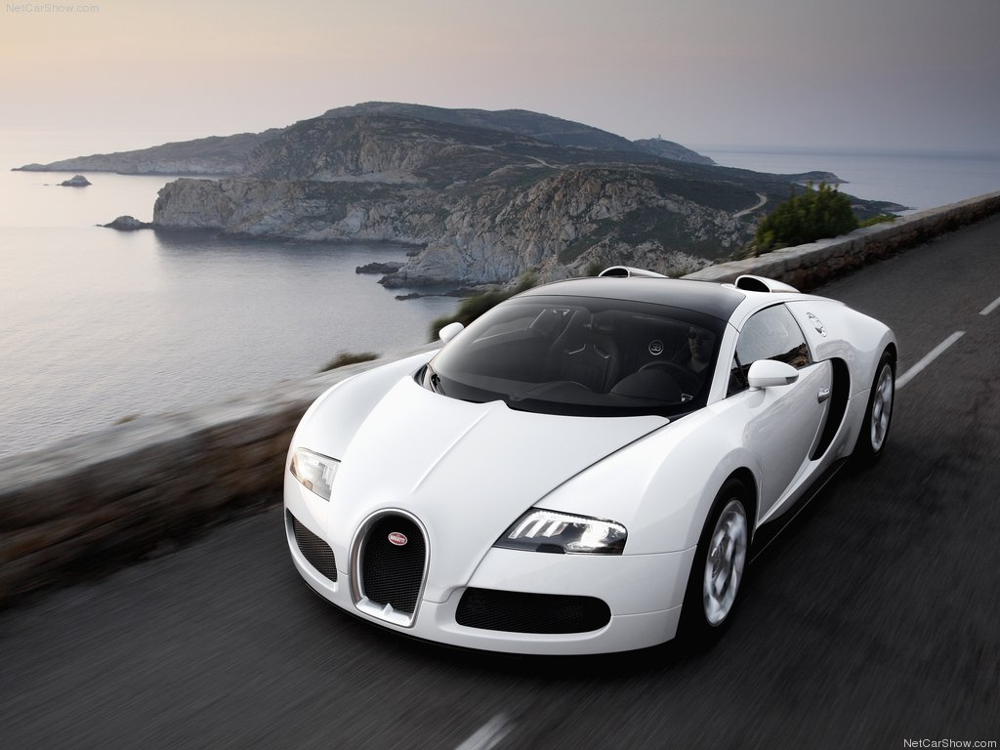
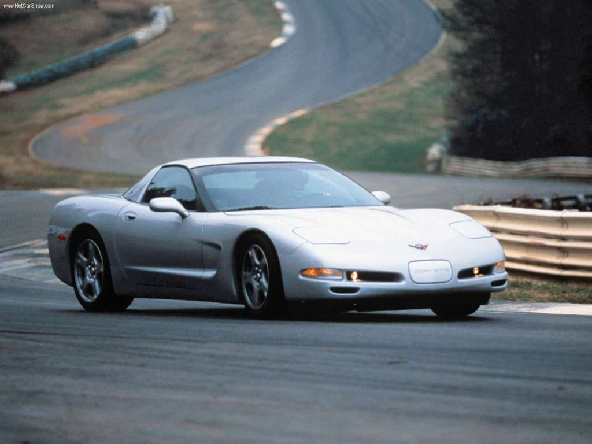
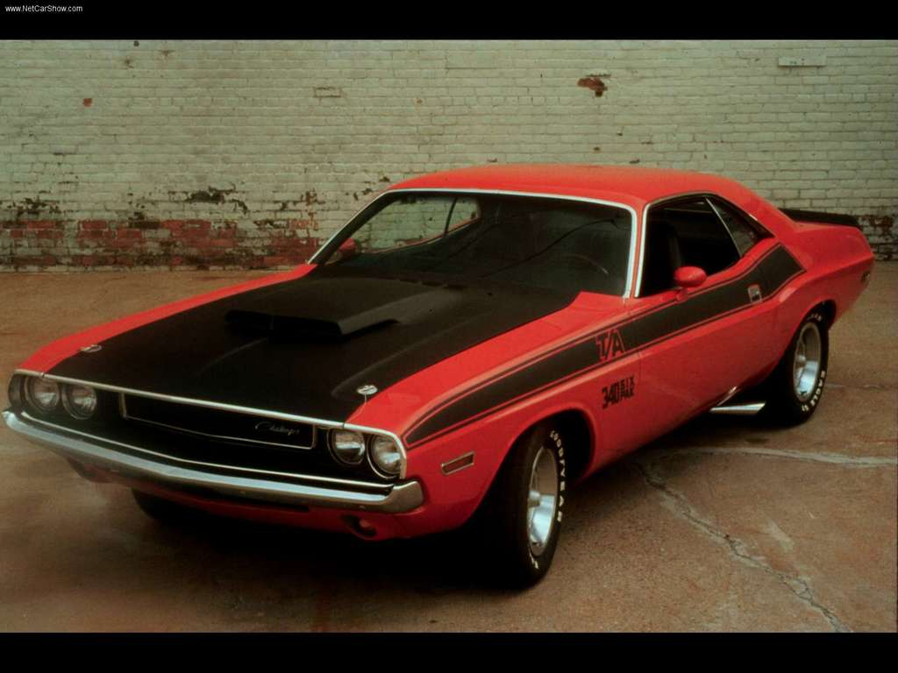

- 
- 
- 

El primer vehículo con motor de combustión nació de las manos del alemán Karl Benz en 1885. ¿Te suena? Efectivamente se trata del fundador de la compañía Mercedes Benz. El Benz Patent-Motorwagen contaba con tres ruedas y una potencia de 0.8 CV, pudiendo alcanzar 18 kilómetros por hora. Sin embargo, no fue el ingeniero quien lo lanzó al estrellato, sino su mujer Bertha, quien realizó un trayecto de nada más y nada menos que 104 km.
Según un estudio realizado por Seguros Direct, 1 de cada 10 conductores reconoce ponerle uno o más apodos a su coche. Y es que no son los usuarios los únicos que ponen apodos a sus vehículos, sino también las marcas que los fabrican. ¿Te acordas del Citröen ID/DS apodado "el tiburón" por su forma? o ¿el Citröen C15 como "la mula"? A algunos de ellos su apodo bien les ha merecido la fama como al Mini o al Volkswagen Escarabajo.
Fabricado en 1966 por el gigante asiático Toyota, con el paso de los años, se ha ganado el título del "Coche más vendido del mundo". Por sus características técnicas, apareciencia y sobretodo precio, ha superado a otros modelos de grandes marcas como Mercedes o Peugeot. Si te estás preguntando cuál es el auto más vendido de la historia de Argentina no es otro que la Toyota Hilux, un auto que fue producido por primera vez en 1968.
El Volvo P1800 fue el ganador de un récord Guinness, al recorrer ¡cinco millones de kilómetros! Esto lo logró su único propietario, Irv Gordon, un profesor de Long Island, quien tuvo el auto durante 50 años.